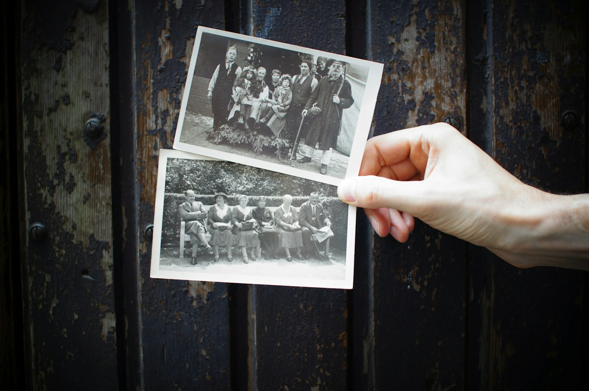

✋
없는 일은 만들지 않습니다
말하지 않은 사건, 감정, 관계, 날짜, 대사는 넣지 않습니다. 기억이 빈 곳은 빈 채로 둡니다.
🗝️ 내 목소리로 남기는 1분 자서전
AI가 당신의 인생을 대신 쓰지 않습니다.
당신이 들려준 기억 하나를, 당신의 말투와 사진과 목소리로
1분 영상 자서전으로 엮어 드립니다.
회원가입 없이 바로 시작 · 작성한 기억은 내 기기에만 저장됩니다
OUR PROMISE
마음서랍이 지키는 순서는 하나입니다.
기억의 진실성 → 당신의 목소리 → 자연스러운 감정 → 이야기 완성도 → 영상의 아름다움.
더 예쁜 영상을 위해 기억을 바꾸지 않습니다.
말하지 않은 사건, 감정, 관계, 날짜, 대사는 넣지 않습니다. 기억이 빈 곳은 빈 채로 둡니다.
“우리 아버지”, “뭐, 그때는 다 그렇게 살았어요.” 평소 쓰시는 호칭과 말버릇을 살려 1인칭으로 씁니다.
분명한 기억, 흐릿한 기억, 사진이 없어 다시 그린 장면을 표시합니다. 재현한 장면을 실제 사진처럼 쓰지 않습니다.
아버지의 성실함은 훗날 나의 인생을 지탱하는 위대한 정신적 유산이 되었다.
우리 아버지는 매일 새벽 다섯 시면 가게 문을 열었어요. 나는 아직도 그게 기억나요.

ONE DRAWER, ONE MEMORY
“나의 70년 인생”을 1분에 담으면 아무것도 남지 않습니다.
인생은 여러 개의 서랍으로 나누어, 한 장면씩 천천히 꺼냅니다.
HOW IT WORKS
“당신의 인생을 이야기해 주세요” 같은 막막한 질문은 하지 않습니다. 장면 하나에서 시작해, 질문은 한 번에 하나씩 드립니다. 기억나지 않으면 “괜찮습니다”하고 넘어갑니다.
마음서랍 1분 영상의 기본 구조
FIVE EDITORS
한 명은 기억을 꺼내고, 셋은 검증하고, 마지막 한 명은 가족의 눈으로 봅니다. 기억과 다른 문장이 하나라도 있으면 다시 고칩니다.
20년차 인터뷰 작가처럼 듣고, 당신의 언어로 정리합니다.
그 장면에서 기억나는 소리가 있나요?
들려주신 기억과 완성본을 한 줄씩 대조합니다.
이 감정은 사용자가 표현하지 않았습니다.
1분 안에 하나의 기억이 자연스럽게 전해지는지 봅니다.
마지막을 교훈 대신 장면으로 끝내 볼까요.
소리 내어 읽었을 때 정말 그 사람 목소리 같은지 듣습니다.
이 문장은 작가가 말하는 것처럼 들립니다.
분석하지 않습니다. 처음 보는 가족처럼 느낌으로 반응합니다.
가족에게 보여주고 싶다.
RED·SILVER·BLUE 모두 9.7점 이상, GOLD가 “다시 보고 싶다” 또는 “가족에게 보여주고 싶다”를 고를 때 한 편이 완성됩니다.
HONEST LABELS
기억은 빠지기도 하고, 가족마다 다르게 기억하기도 합니다. 그 불완전함까지 당신의 기억입니다.
직접 보고 들은 그대로 남깁니다.
“뒷자리에 앉으면 아버지 등에서 비누 냄새가 났어요.”
단정하지 않고, 말씀하신 그대로 ‘쯤’과 ‘것 같다’를 살립니다.
“아마 일곱 살쯤이었던 것 같아요.”
들려주신 정보만 확정하고, 얼굴 대신 뒷모습·손·사물로 기억을 그립니다.
“그 골목은 사진이 없어서, 기억대로 다시 그렸습니다.”
DRAWERS
거창한 사건이 아니어도 됩니다. 붕어빵 냄새 하나, 신발 한 켤레가 한 편의 자서전이 됩니다.
새벽마다 가게 문을 열러 가던 아버지의 짐자전거
지금도 자전거 체인 소리를 들으면, 그 새벽이 먼저 생각나요.
겨울이면 난로 위에 올려 두던 양은 도시락
뚜껑을 열면 밥 위에 계란 하나가 꼭 있었어요. 그건 우리 엄마 표시였지.
누런 월급봉투를 들고 집까지 걸어온 날
얼마였는지는 기억이 안 나요. 봉투를 엄마한테 그대로 드렸던 것만 생각나요.
※ 위 내용은 서비스 이해를 돕기 위한 예시입니다.
FAQ
네. 질문은 기억을 시험하는 문제가 아닙니다. “기억이 안 나요”라고 하시면 “괜찮습니다, 기억나는 부분만 남기겠습니다” 하고 넘어갑니다. 빈칸을 AI가 그럴듯하게 채우지 않습니다.
괜찮습니다. 사진이 없는 장면은 말씀하신 내용만으로 ‘재현’ 장면을 설계하고, 영상에도 재현이라고 표시합니다. 있으면 좋을 자료는 따로 알려 드리지만, 자료가 없다고 이야기를 멈추지 않습니다.
대본의 장면마다 직접 읽어 녹음하실 수 있고, 녹음한 목소리가 그대로 영상 내레이션이 됩니다. 녹음이 어려운 장면만 기계 음성으로 미리 들어 보실 수 있습니다.
누가 맞는지 판단하지 않습니다. “나는 그날 비가 왔다고 기억한다. 누나는 맑은 날이었다고 기억한다.”처럼 각자의 기억으로 남깁니다.
아니요. 남기고 싶지 않은 내용은 이유를 묻지 않고 빼 드립니다. 죽음, 질병, 가난 같은 기억도 말씀하신 범위 안에서만 담고, 자극적으로 만들지 않습니다.
마음서랍 스튜디오에서 작성한 기억과 사진, 녹음은 지금 쓰시는 기기의 브라우저 안에만 저장됩니다. 원하실 때 파일로 내려받아 보관하거나 가족에게 전할 수 있습니다.
“이 영상을 본 사람이 ‘AI가 만든 이야기’가 아니라
‘이 사람이 자기 삶을 이야기하고 있다’고 느끼는가.”
장면 하나면 충분합니다. 나머지는 천천히 여쭙겠습니다.
첫 서랍 열기 →